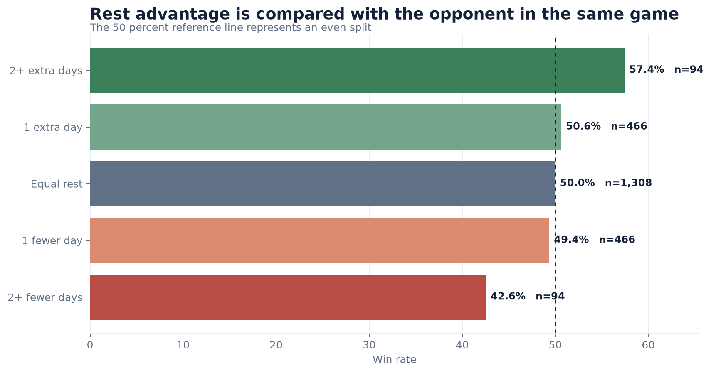
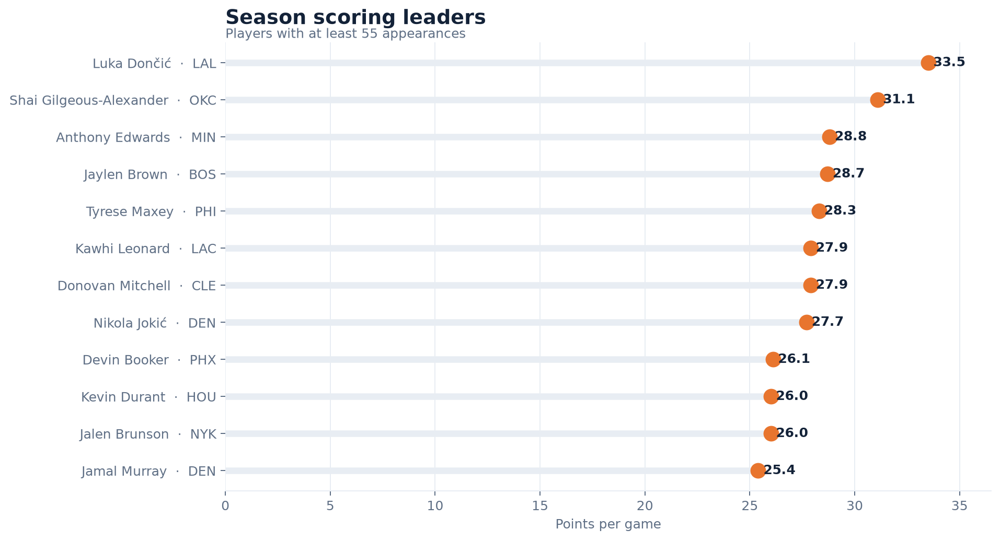
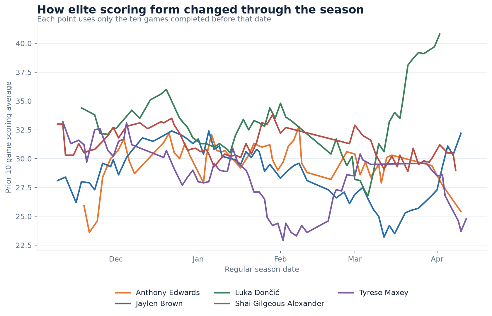
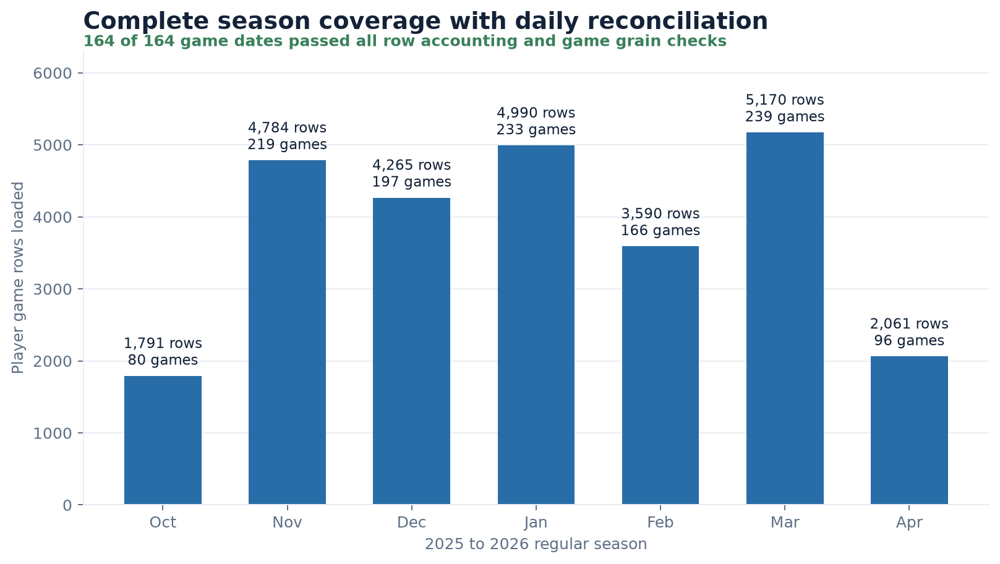

Elite production at meaningful volume
Qualified leaders are filtered by appearances, so availability is part of the result rather than an afterthought.
Data engineering case study
A production style warehouse for the complete 2025 to 2026 NBA regular season. The system converts official NBA game logs into trusted player form, team performance, and schedule context datasets.
Primary finding
Each team was compared with its opponent in the same game. This controls for the schedule context better than grouping teams by their own rest alone.
Teams with at least two extra rest days won 57.4 percent of their games. Teams with at least two fewer rest days won 42.6 percent. Equal rest produced the expected 50 percent split.

Season results
The Gold layer supports player level and team level questions without rebuilding transformations for every analysis.



Qualified leaders are filtered by appearances, so availability is part of the result rather than an afterthought.
Window frames stop at the prior game, which makes the mart safe for reporting and future model features.
This separates close game variance from teams that consistently outscored opponents across the season.
Reliable delivery
The project is designed so another engineer can explain where each number came from, replay any date, and detect incomplete data.

Architecture
Two season level API requests are split into daily Bronze snapshots. This keeps API usage low while preserving daily lineage, replay, and reconciliation.
Chrome TLS impersonation, retry logic, and polite request pacing for reliable official data access.
Append only manifest entries record checksums, byte sizes, row counts, source dates, and ingestion timestamps.
Natural key upserts make replays idempotent. Invalid records enter quarantine with a reason instead of disappearing.
Player form, team schedule context, and completeness marts support fast reporting in DuckDB.
Bronze counts must equal loaded plus quarantined rows, and every game must contain exactly two team records.
Production incidents
The most useful engineering evidence is not that nothing failed. It is that failures were observable, explainable, and recoverable.
The January 15 reconciliation reported 18 team rows but only eight
derived games. The official feed marked both Orlando and Memphis
as away teams. The fix added deterministic slot assignment and an
is_neutral field through Alembic migration 0002. The
affected date was replayed from Bronze without another API call.
Direct curl requests succeeded while the standard Python client
timed out. The difference identified TLS fingerprinting as the
cause. The client now uses Chrome impersonation through
curl_cffi, with bounded retries and request pacing.
Daily ingestion is appropriate for operations, but historical backfill should not issue hundreds of calls. The season command requests player and team logs once each, partitions both responses by game date, and retains the same daily lineage contract.
Method and limits
All 1,230 regular season games from October 21, 2025 through April 12, 2026. Playoffs are outside this project scope.
Rest advantage is descriptive, not causal. Travel distance, injuries, team strength, and intentional rest may also influence game outcomes.
Pipeline checks validate completeness and grain. Selected scores and player lines were also compared with NBA.com, official scorer reports, ESPN, and Basketball Reference.